How to vectorize an image
A picture book on turning pixels into curves, taught through how unpixel does it. Every figure marked “Real run” comes from running this repository's code on the images in battery/.
Chapters
Vectorizing comes down to two decisions: which colors exist and where the borders between them run. This book follows how unpixel makes each one, and shows what each step does to a real image.
src/unpixel/engine/. On the command line that behavior needs --engine new, because classic is still the CLI's default.1. Raster and vector
A raster is a grid: a list of squares, each with its color. A vector is a description: “fill the area bounded by these curves with this color.”
Magnify them and the difference shows. The raster reveals its squares. The vector is simply computed again at the new size.
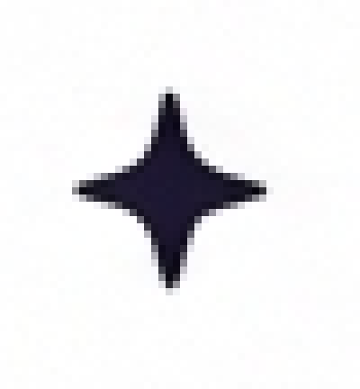
Those grays are antialiasing: an edge pixel blends its two neighboring colors. It is the first enemy in this trade, because it adds thousands of colors the artist never painted.
Why flat colors
This axolotl image has 89,980 distinct colors. unpixel's result has 16. Each one is a layer you can edit, cut or print on its own.
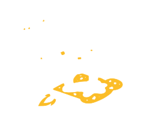
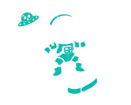
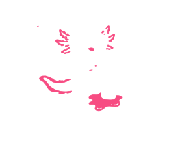
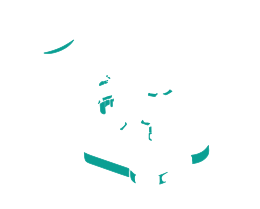
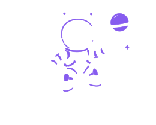
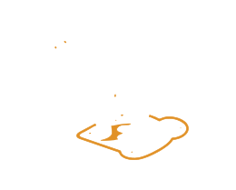
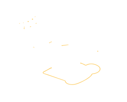
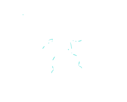
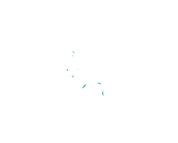
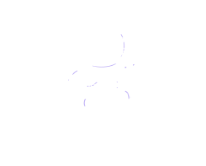
Why contours matter
On screen, a regular contour and a jittery one can look the same. To a plotter or a vinyl cutter they do not. The machine follows the line. Each extra node is a hesitation, and each overlap is a pass where it should not cut.
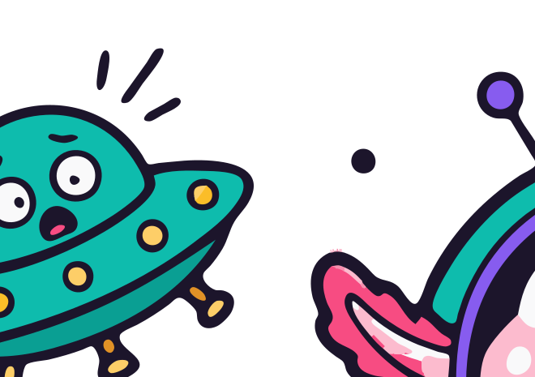
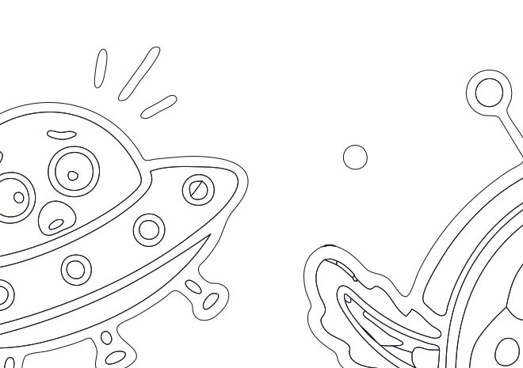
--layers cutout) with fills and with lines only. Notice that a wall looks like one line even though the file writes it twice, once for each region. Chapter 8 comes back to this.2. The whole path
First the map. The chapters that follow visit each stop.
classifypixeltakes an exact shortcutperceptualcompressed Labbilateral,flatten_gradientsnot onhardtransition_maskwho is a mixfind_backgroundflood from the borderbuild_palettetwo passes; useshighlight_maskassignreach 9; background, 3dissolve_fringessettle_colorseach color, the median of what it gotrefine_doublemap at 2×absorb_specks,dissolve_speckle,drop_floating_paleplanar.buildwalls and junctions_subpixel,find_cornerssmooth_chains,fit_chainswrite_svgfills and trap strokes
Now the same journey in pictures. The area is always the same: the axolotl's head.

bilateral, flatten_gradientstransition_mask (magenta)
assign to the palette
dissolve_fringes, refine_double at 2×
absorb_specks and friends3. Telling kinds of image apart
Pixel art wants exact corners. A hand drawing wants smooth curves. Treating them alike ruins one of the two, so unpixel asks first, with classify.
It asks on the untouched source: of the strong color jumps between neighbors (ΔE over 15), how many happen at once, with flat color on both sides (ΔE under 3)?
synth-pixel
synth-hard: edges with no antialiasing
synth-aa: same drawing with antialiasing
axolotl: a real drawing
| Image | Kind | Block | hard_share | Colors |
|---|---|---|---|---|
synth-pixel | pixel | 16 | 1.000 | 6 |
synth-hard | hard | 1 | 0.997 | 6 |
synth-aa | soft | 1 | 0.001 | 636 |
axolotl | soft | 1 | 0.000 | 89,980 |
ghost | soft | 1 | 1.000 | 7,686 |
classify. The first three are synthetic, from tools/engine/synth.py, because the battery has no pixel art or hard geometry: all nine real images are soft. ghost gets a hard_share of 1 because it has no strong jump at all, and stays soft because of its many colors.The rules: pixel if there is a grid (or the image is tiny with few colors); hard if jumps are clean and there are at most 4096 colors; soft otherwise.
What it changes in the output

synth-pixel, block of 16 px. unpixel recognizes the grid, takes one pixel per block and writes only straight lines: it matches the source.
synth-hard, a staircase because it has no antialiasing. The output is straightened into clean edges.Simplifying what is not a drawing
What should happen to an image that is not a drawing, such as a photo or plain noise? Tracing every grain costs enormous time and memory, and produces a file nothing can open. So unpixel simplifies it.
A result with more than 8,000 regions counts as too busy. segment_new blurs the image with a sigma of 2 px and starts again; if that is not enough, 4, then 8, and it stays with that. It warns that it did so.
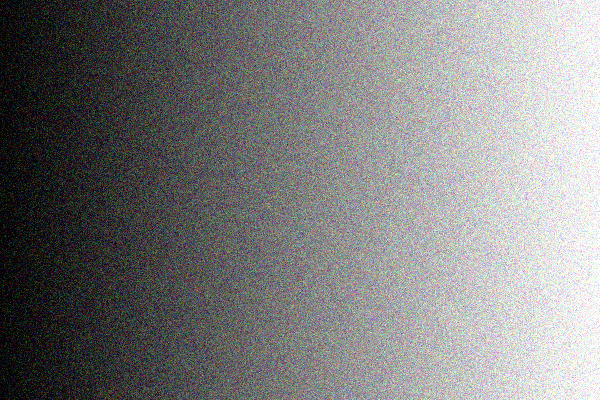
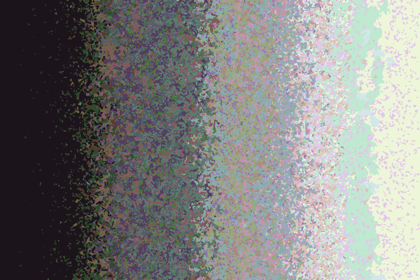
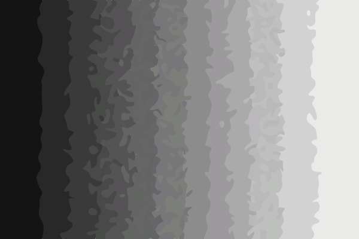
pipeline.run, which does not retry (34,705 regions, 21 colors, 12.2 s); and the command line (3.0 s, 304 MB). Regions per attempt: 34,705 → 121, stopping at sigma 2. The warning: “This image is very busy, like a photo or noise, so it was smoothed first to keep the result usable.”With the retry the grain is gone and the ramp reads as bands: what you gain is a file you can open. On pure noise at 1.5 megapixels the command line here takes 45.7 s, peaks at 2,318 MB and writes 3,493 KB. Development tests of this change, not repeated here, put the same case without the retry at 360 s, 25 GB and 294 MB.
The retry lives only in the command-line path. The battery's images do not reach the limit: according to the code, the busiest has about 1300 regions.
4. Color
Lab, and why it needs warping
To decide whether two colors are “the same” you have to measure distance. In RGB that distance does not match what the eye sees. Lab tries to: L is lightness, a and b are the hue and how strong it is. Straight-line distance there is called CIE76, or ΔE.
CIE76 has two known flaws. It overstates the difference between very saturated colors, and between darks whose tint nobody can see. Left alone, it splits a violet in two, and an outline may ask for several blacks.
unpixel answers with perceptual: it compresses chroma (how strong a color is) where CIE76 overstates it. The map is exact and invertible.
perceptual keeps, measured on a grid. Horizontal axis: a color's chroma. Vertical axis: the share that remains. The lines are three lightness levels: in the darks (L = 10) nearly all chroma goes.| Pair | ΔE in Lab | ΔE warped |
|---|---|---|
| two saturated violets | 21.4 | 10.0 |
| two tinted blacks | 11.0 | 5.4 |
| two pale pinks | 9.0 | 7.3 |
| two mid browns | 9.8 | 8.6 |
perceptual. The saturated violets and the blacks drop by half. The pale and mid pairs change little.What if it is turned off? That is easy to try: replace both functions with the identity and run unpixel again.
perceptualperceptualWithout perceptual the axolotl's violets are #9957FA, #7160E1, #BAAAF5 (17 colors in all). With it, #875CEF, #B9A9F5 (16 colors).
| Image | With: colors (darks L < 25) | Without: colors (darks) |
|---|---|---|
axolotl | 16 (1) | 17 (1) |
diver | 20 (2) | 22 (1) |
leaves | 17 (2) | 19 (2) |
chef | 16 (1) | 16 (1) |
ghost | 8 (0) | 8 (0) |
watchmaker | 19 (2) | 18 (1) |
float | 19 (1) | 21 (2) |
sunset | 16 (0) | 19 (0) |
principito | 19 (3) | 17 (2) |
perceptual; below, without. The split violet is confirmed. The “three blacks” the code's docstring mentions do not reproduce on this battery: unwarped, there are never more than 2 darks. And on some images turning it off reduces colors, so the effect does not always go the same way.Why small colors get lost
Take the Little Prince: his skin, the highlight on the glass and the shine on the ground. They cover little area and mean a lot.
A well-known general way to pick colors is k-means. It places K centers to minimize the sum of distances from all pixels. Each pixel counts once, so a large area counts a lot. Giving the sky two centers can pay off better than giving one to the skin. Small colors lose even when they are very different.
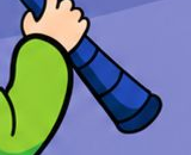
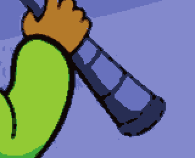

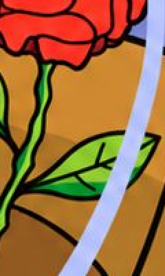


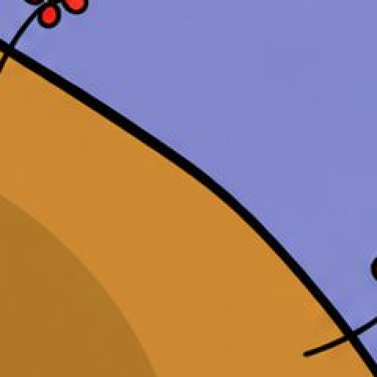

scipy's, on the image in Lab after a 3×3 median. It turns the hand brown, merges the glass with the sky and loses the shine on the ground. unpixel keeps all three.| Color in the source | K-means | unpixel |
|---|---|---|
| skin | 39.1 | 4.4 |
| glass | 22.6 | 1.6 |
| ground shine | 8.4 | 0.0 |
| shadow | 5.2 | 4.8 |
| telescope | 27.7 | 4.2 |
| shoe | 7.9 | 0.7 |
| navy | 8.8 | 4.9 |
| sky band | 8.6 | 2.2 |
How unpixel's palette protects them
The idea is farthest point. Take the most abundant color. Then the one farthest from what you have. And so on until nothing is left far away. The score is distance² × mass^0.3: so low an exponent means area only breaks ties.
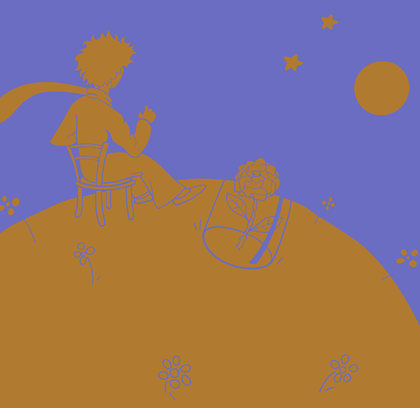
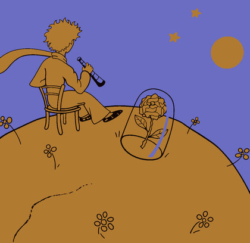
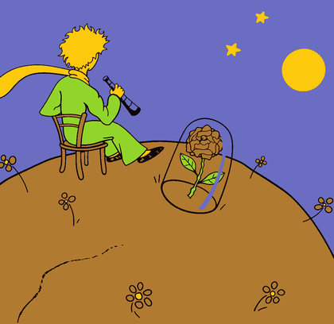
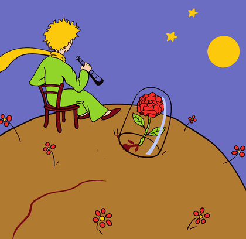
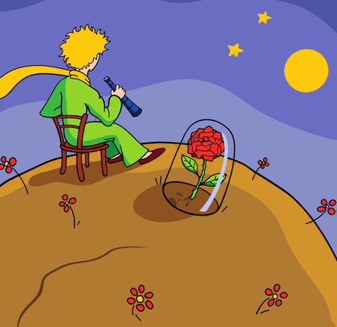
assign itself. Look at the jump from 1 to 2 (the sky), and how yellow and green appear with very few seeds.| Order | Seed | Why | Distance | Mass |
|---|---|---|---|---|
| 1 | #B27A31 | largest mass | — | — |
| 2 | #6A6DC2 | distance × mass | 66.2 | 23.469% |
| 3 | #0F0403 | distance × mass | 59.3 | 2.444% |
| 4 | #92D62B | distance × mass | 44.9 | 1.735% |
| 5 | #FDCA0E | distance × mass | 30.8 | 3.037% |
| 6 | #F82D28 | distance × mass | 31.9 | 0.613% |
| 7 | #BBC7FA | distance × mass | 34.4 | 0.212% |
| 8 | #770B12 | distance × mass | 37.1 | 0.077% |
| 9 | #F9D0AF | distance × mass | 32.1 | 0.163% |
| 10 | #1B8B3D | highlight | 34.4 | 0.014% |
| 11 | #3DB93F | highlight | 18.0 | 0.215% |
| 12 | #888FC8 | highlight | 15.3 | 0.565% |
| 13 | #1F46B7 | saturated dark | 25.4 | 0.048% |
| 14 | #A12F16 | saturated dark | 18.3 | 0.274% |
| 15 | #8D521F | distance × mass | 16.2 | 2.872% |
| 16 | #D3932B | distance × mass | 12.0 | 4.225% |
| 17 | #4D56A8 | distance × mass | 9.8 | 1.057% |
| 18 | #5C391D | distance × mass | 16.1 | 0.196% |
| 19 | #052F68 | distance × mass | 26.1 | 0.016% |
build_palette, in its second pass. Mass is the share of pixels around that histogram bin. See how many picks have a mass under 1%, and one surprise: the glass comes in seventh, on distance alone. The three “highlight” slots go to other tones here.After picking, a few rounds of Lloyd (the k-means step) center each color on what it explains. That step was never k-means' problem; the problem is letting area decide where it starts. Protected colors stay pinned: they average only with what lies within 6 of them. At the end, settle_colors replaces each color with the median of its solid pixels.
On top of that there are two reserves: highlights and saturated darks.
Highlights
From the ninth color on, up to three slots go to tones from highlight_mask (chapter 5). The rule can be switched off to see what is lost.
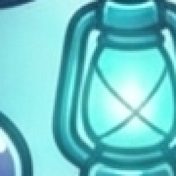
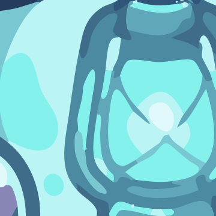
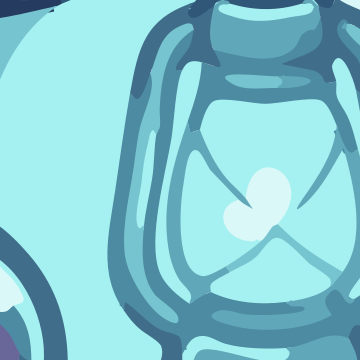
diver with the rule on and off. Without it the palette no longer has #84F1ED, #8987B8, #E3C0B5: the lantern loses its liveliest cyan. The surprise is the Little Prince: there, switching the rule off only removes #079835, a dark green. The glass survives anyway, because it is already far from everything else.Saturated darks
Compressing chroma has a cost. A shoe's dark red looks, in the warped space, like any brown. So these colors are judged in plain Lab: L between 15 and 38, chroma of at least 35 and 1.6 times L, and an area with some body.
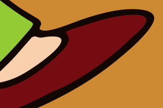
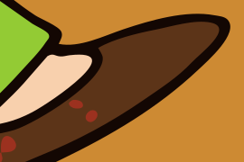
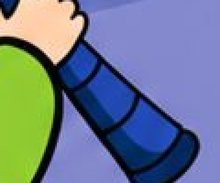
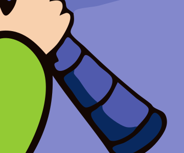
SAT_DARK_SLOTS = 0) the palette loses #740C11, #2348AE. The shoe turns brown with red specks and the telescope loses its blue. The price is more colors: 19 instead of 17.5. Masks
A mask is a yes-or-no image: each pixel meets a condition or does not. Masks are unpixel's central tool. Each one answers a question and decides who may do what.
| Mask | Question | What it decides |
|---|---|---|
| Background | Can a flood from the border reach it? | It becomes transparent. Nothing else can. |
| Transition | Is it a mix of its two sides? | It gets no vote on the palette, and picks its color only among neighbors. |
| Solid | Is it neither of the above? | It votes on the palette and picks its color freely. |
| Highlight | Is it solid and clearly lighter than its surroundings? | It competes for the palette's reserved slots. |
Background: the flood
Is this pixel white? That is not enough. The white inside an eye is not background. The background is what you can reach from the border without crossing anything.
The image's border sets the color (here #FCFCFC). Then: pixels alike to that color (within 5); an erosion of 1 px, so a slit cannot let the flood through; keep the pieces touching the border; and a dilation to recover what erosion took.
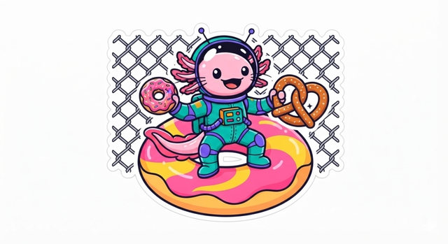
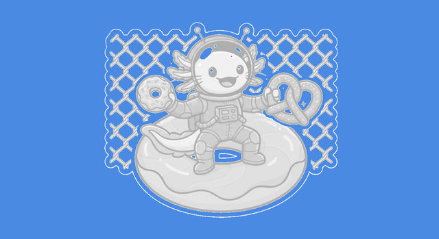
near: alike to the background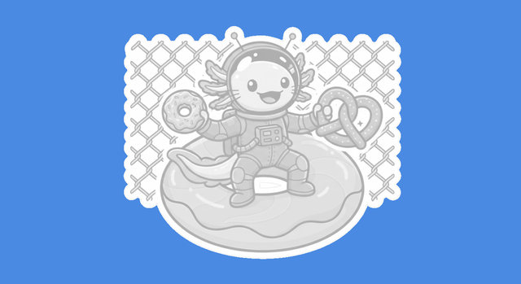
flood: those touching the border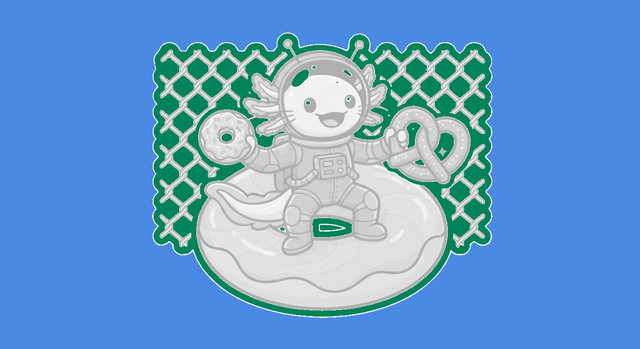
find_background on float, read from the function itself. The background is 63.1% of the image. Another 10.4% looks like background but lies inside, in green: the fence's holes and the sticker's interior are left alone.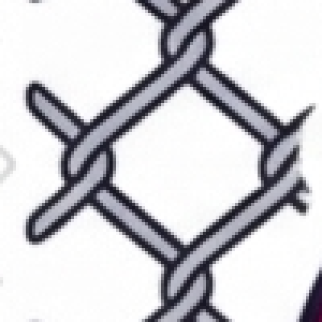
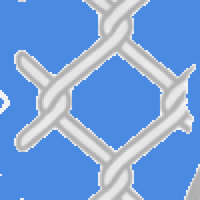
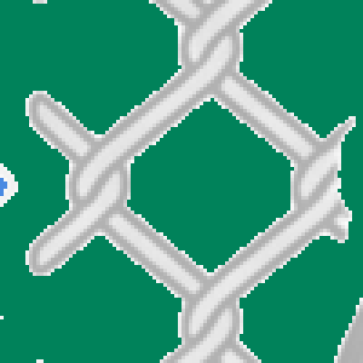
--also-transparent; the command line warns about it.The flood is only tried if the border is uniform: 85% of it must lie within 6 of its median. In sunset and principito it is not, so nothing is removed. unpixel says so: “The image border is not one uniform color (dominant color covers 41%), so no background was removed. Pass --background '#RRGGBB' to name it.”
Transition: who is a mix
An edge pixel is, almost literally, a mix of the pixels on its two sides. transition_mask checks just that.
What it leaves unmarked matters most. The center of a thin line is not a mix: its two sides are alike, so there is no contrast and the test fails. A line survives because its center stays solid.
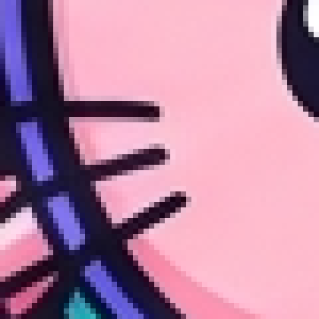
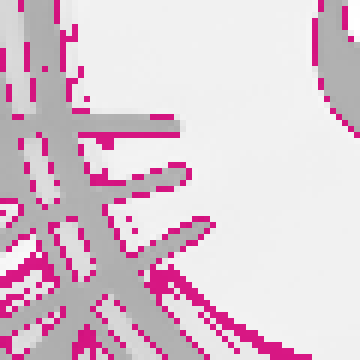

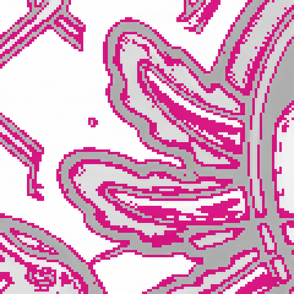
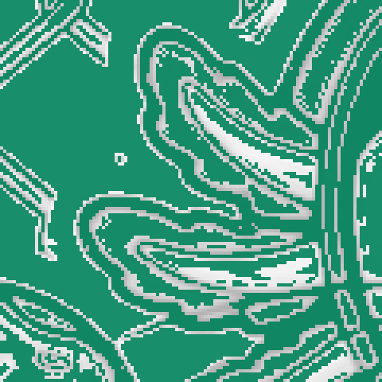
float. The pink shadow between the dark outline and the vivid pink is nearly all magenta, because it is a gradient. Keep this in mind for chapter 6.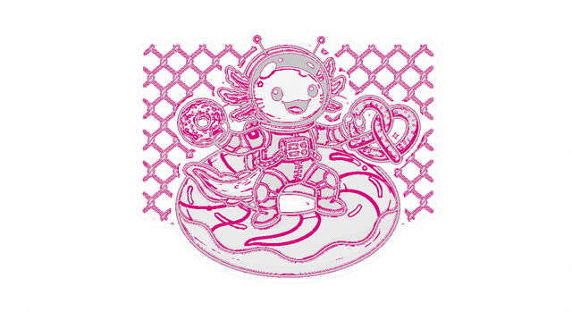
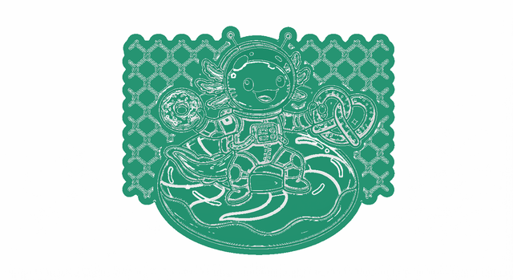
float. The rest, in white, is background.Highlights
A highlight is a solid pixel whose lightness beats the average of the 21 × 21 pixels around it by at least 10.
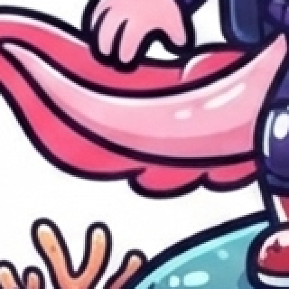
highlight_maskdiver with the most highlights (in all, 3.1% of the image). It marks true highlights, and also the light side of every dark outline, since the average drops there: the mask is generous. A reserved slot also requires being far from the palette.6. Assignment: how far a pixel may look
With a palette and masks, each pixel needs a color. A solid pixel takes the closest one. A transition pixel may not: it chooses only among colors that exist in solid form within a window. How large should that window be? The constant is ASSIGN_WINDOW, and the answer is a tradeoff worth seeing.
With no limit: the halo
Between a dark outline and a blue-green fill, the mix passes through a dark green. If the palette has a dark green somewhere else, the edge pixel takes it. The result: every outline gets a ring of a third color. That is a halo, and it is why a limit exists.
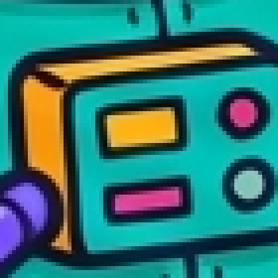
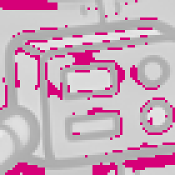
Too little reach: the shadow that turns black
So a small window seems best. A reach of 3, a window of 7 × 7, stops the halo. But look at the gills in float: parts of the shadow turn black.
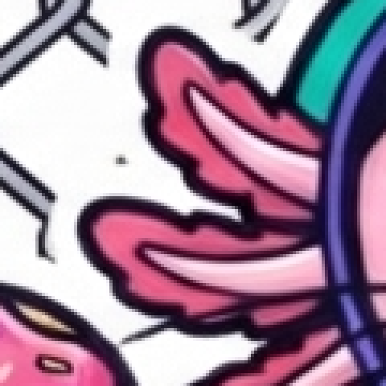
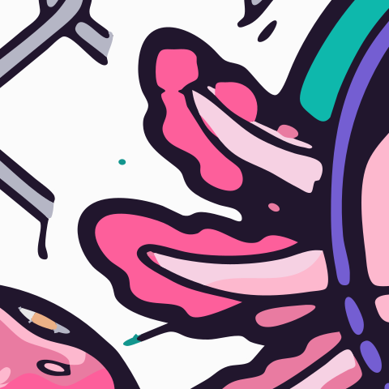
One pixel shows why. The shadow is a gradient, so its pixels are transitions. If the gradient is wider than the window, no solid pink is in sight. Only the outline is left.
Solid colors within that pixel's reach:
At reach 3
At reach 9
| Image | 3 | 6 | 9 | 12 |
|---|---|---|---|---|
axolotl | 288 | 92 | 89 | 88 |
diver | 172 | 72 | 64 | 39 |
leaves | 668 | 110 | 74 | 69 |
chef | 8 | 3 | 3 | 3 |
ghost | 0 | 0 | 0 | 0 |
watchmaker | 540 | 28 | 23 | 19 |
float | 1,125 | 312 | 164 | 138 |
sunset | 0 | 0 | 0 | 0 |
principito | 452 | 355 | 349 | 378 |
| Total | 3,253 | 972 | 766 | 734 |
What reach costs
| Reach | Total KB | Paths | Nodes | Total seconds | Peak MB |
|---|---|---|---|---|---|
| 3 | 2,926 | 3,745 | 50,639 | 34.6 | 942 |
| 6 | 2,968 | 4,038 | 51,000 | 35.0 | 943 |
| 9 | 3,058 | 4,333 | 52,500 | 35.1 | 942 |
| 12 | 3,109 | 4,497 | 53,302 | 34.8 | 943 |
| KB per image | 3 | 6 | 9 | 12 |
|---|---|---|---|---|
axolotl | 253 | 245 | 251 | 250 |
diver | 412 | 445 | 491 | 511 |
leaves | 430 | 442 | 452 | 462 |
chef | 102 | 101 | 98 | 101 |
ghost | 116 | 119 | 119 | 119 |
watchmaker | 638 | 690 | 714 | 731 |
float | 470 | 433 | 444 | 440 |
sunset | 268 | 255 | 247 | 250 |
principito | 237 | 238 | 242 | 245 |
| Total | 2,926 | 2,968 | 3,058 | 3,109 |
axolotl, chef, float, sunset shrink. From 9 to 12, 6 of 9 grow.The value 9 was chosen by eye by the project's owner, looking at the battery. There is no computed optimum. What the numbers say: 6, 9 and 12 cost no time; nearly all the gain arrives by 9, and the SVG keeps growing after it. 6 would also have been defensible.
Why the background has a shorter reach
The background is also a “color” a pixel can reach. A very pale highlight behind a thin outline can see the background across the line, 9 px away, and resembles it more than anything else. The highlight becomes a hole.
--colors 8, on magenta so transparency shows. If the background had the same reach as colors, the dome's highlight would be a hole of 103 px. Hence BACKGROUND_WINDOW = 3: colors are seen from 9, the background only from 3. Reproduced by changing that constant.The lesson: one window was never one decision. There are two different questions, and each needs its own distance.
7. Cleaning
Assignment leaves debris. Each cleaning rule answers one kind of debris, and each can be wrong. Here they are with their successes and, when there are any, their mistakes.
The neighbors' vote
Inside assign, each pixel pays up to 5 ΔE for disagreeing with its 3 × 3 neighbors. Specks between close tones fall. A lone dark dot, far from everything, stays.
assign with rounds=0 and rounds=3, on the axolotl. Look at the edges: the stepping of close tones clears up, and the dark dot stays. 816 pixels change.Fringes: dissolve_fringes
A thin band whose color lies between those of its two sides is not a color: it is an edge. Each of its pixels goes to the closer side. A true thin line is safe: its color does not lie between its neighbors, or it has the same one on both sides.
float. Before, a dark green ring surrounds each outline of the box. It dissolves. Across the image, 13,263 pixels.There is a trick here: unpixel runs twice. Bands found in the first pass join the transition mask, and stop voting on the second pass's palette.
First pass, 18 colors
Second pass, 19 colors
float in each pass.Doubling the map: refine_double
refine_doubleSpecks: absorb_specks
A piece under 12 source pixels goes to the neighbor closest in color. If it stands out (ΔE ≥ 25), it is absorbed only below 4 px. A piece under 60 px that barely differs (ΔE < 16) also goes, as texture.
diver, where it changes most. Here the rule does harm: each stretch of the wire cross is a small, low-contrast piece, so the stretches get absorbed. The cross ends up cut.Crowds: dissolve_speckle
The idea: a speck is texture if it has low contrast (ΔE < 32), is small (≤ 40 px), has a single neighbor and is surrounded by others like it (more than 4 within 30 px). The aim is speckled rock and dots inside a shadow.
watchmaker, 17 islands. This is a failure. Those “islands” are the pocket's stitches, which the source has. A seam is exactly a crowd of small, low-contrast marks.float, 5 islands: unpixel erases several salt grains the source has. Islands dissolved here: axolotl 0, diver 0, leaves 3, chef 0, ghost 0, watchmaker 17, float 5, sunset 0, principito 0. In both cases looked at closely, what goes is real detail. This rule deserves a second look.Pieces adrift: drop_floating_pale
Removing a white background can leave loose threads of a sticker's line floating in the void. On white they cannot be seen; on a color, they can.
leaves. A piece goes if it touches only background, lies within 26 of it and is thin. 11 pieces go. This cleaning has a cost: the sticker really had that border, and now it does not.8. Geometry: the heart of it
If one idea defines unpixel, it is this one.
A simple way to build a multi-color vector is to trace each color on its own, with a tracer such as potrace. The pink's contour is computed looking only at the pink, the black's looking only at the black. That is two computations of the same border, and nothing makes them agree. To hide the slits, each lower layer is then extended under the ones above it.
unpixel computes the border itself, and both regions use it.
The planar map
Walls run along the cracks between pixels of different classes. A point where three or more cracks meet is a junction. A stretch of wall between two junctions is an arc. Regions are loops of arcs.
planar.build.To compare fairly, we can trace unpixel's own class map the general way, with potrace on each color. Same regions, same colors; only the tracing differs. unpixel does not work like this: it is a demonstration of the technique.
cutoutAre the curves really shared? It can be measured in the file: count how many times each segment appears in the fills, with its exact coordinates.
| Image | Traced per color | unpixel cutout | |||
|---|---|---|---|---|---|
| Segments | Exact in two places | Segments | Exact in two places | In more than two | |
axolotl | 3,074 | 22.3% | 2,351 | 80.0% | 0 |
diver | 5,664 | 9.4% | 4,254 | 93.3% | 0 |
leaves | 5,715 | 15.5% | 4,051 | 94.9% | 0 |
chef | 1,475 | 14.0% | 990 | 73.7% | 0 |
ghost | 1,956 | 24.9% | 1,016 | 83.6% | 0 |
watchmaker | 7,439 | 13.4% | 6,314 | 95.2% | 0 |
float | 4,618 | 33.3% | 4,007 | 96.3% | 0 |
sunset | 4,489 | 25.3% | 2,177 | 98.7% | 0 |
principito | 2,934 | 45.7% | 2,066 | 98.6% | 0 |
From crack to curve
A wall fresh from the map is a staircase. Four steps turn it into a curve.
_subpixel: where color crosses halfwaysmooth_chains: smooth without shrinkingfit_chains: cubics and nodesG(x) + G(x − G(x)); and a Bézier fit to 0.45 px, or 0.6 on low-contrast walls.At a junction, every wall ends on the same coordinate: the average of the first points of those arriving. And if a wall runs straight through, its two halves share a tangent, so no kink appears.
Corners
Smoothing is good except where the drawing has a true corner. Corners are sought at three smoothing scales (0.8, 1.5 and 2.4 px). A staircase turns only at the fine scale. A wide curve reaches a high angle only at the coarse one. A real corner turns at all three.
Then a second filter. It must turn abruptly (at least 60° within 2.6 px) or be a tip (110° to 165° within 5 px). The round end of a stroke turns nearly 180° and does not pass. The rule: smooth, unless the source has an abrupt cut.
find_corners. Magenta: those that stay. In the Little Prince's hair, tips survive. On the UFO's little lines, round ends are discarded, as they should be. On the axolotl's star, all four tips are discarded, and they come out very sharp but rounded: see figure 1.2. Across the axolotl, 87 of 268 stay; in the Little Prince, 130 of 271.
Gaps, trap strokes and hairlines
With two regions sharing an exact wall, is any gap left? In geometry, no. When drawn, yes. An antialiasing renderer paints A's edge at 50% and then B's at 50% on top. The result covers 75%, and the background shows through. That is a hairline, and it does not depend on perfect geometry.
cutoutstacked| Image | stacked | cutout |
|---|---|---|
axolotl | 456 | 24,897 |
diver | 1,539 | 30,376 |
leaves | 883 | 39,365 |
chef | 108 | 10,000 |
ghost | 225 | 15,402 |
watchmaker | 2,060 | 40,976 |
float | 580 | 46,049 |
sunset | 428 | 35,588 |
principito | 198 | 35,701 |
rsvg-convert at real size and tools/engine/measure.py.Tracing per color usually solves this with an underlap, here 4 source pixels. That is simple and robust, but it adds a lot of hidden geometry.
unpixel does not touch the fills. After a color's fills, it strokes in that same color the walls it shares with upper layers. The upper layers land on their own color, leaving nothing below to show. This is a trap stroke.
stacked SVG weighs a good deal more than its cutout. Each stroke also carries data-shapes, naming the shape that owns each wall, so a recoloring tool need not guess from geometry.Stacked or cutout
stacked writes fills and traps, and orders layers by thickness: thick at the bottom, thin on top, so that walls on what is thin stay exact. cutout writes only fills, ordered by area. It is meant for plotters and screen printing, and will show seams on screen.
9. Results on the battery
Drag the slider to compare the source with unpixel. Change the image or the zoom.
rsvg-convert on white, at 1100 px at most. The SVGs are linked too, so you can magnify them without limit in a browser.| Image | Colors | Paths | Nodes | Nodes /100 px | Turns > 30° /1000 px | KB | Mean ΔE | p95 ΔE |
|---|---|---|---|---|---|---|---|---|
axolotl | 16 | 377 | 4,232 | 7.8 | 3.3 | 251 | 1.80 | 10.0 |
diver | 20 | 909 | 8,223 | 12.4 | 2.8 | 491 | 1.98 | 11.1 |
leaves | 17 | 536 | 7,895 | 9.9 | 7.3 | 452 | 3.40 | 14.5 |
chef | 16 | 113 | 1,720 | 7.1 | 3.0 | 98 | 0.70 | 3.5 |
ghost | 8 | 137 | 1,865 | 5.6 | 0.1 | 119 | 0.40 | 2.1 |
watchmaker | 19 | 1,286 | 12,327 | 13.8 | 3.9 | 714 | 2.65 | 10.8 |
float | 19 | 502 | 7,864 | 8.4 | 2.3 | 444 | 3.15 | 15.5 |
sunset | 16 | 256 | 4,298 | 6.0 | 0.5 | 247 | 5.46 | 12.8 |
principito | 19 | 217 | 4,076 | 5.8 | 3.8 | 242 | 1.72 | 8.0 |
stacked, measured in the written SVG with tools/engine/measure.py. Turns at junctions do not count. Mean ΔE says nothing about the defects in chapter 10.Time and memory
| Image | Seconds | Peak MB |
|---|---|---|
axolotl | 3.8 | 633 |
diver | 4.4 | 672 |
leaves | 4.0 | 692 |
chef | 3.3 | 593 |
ghost | 2.4 | 567 |
watchmaker | 4.5 | 725 |
float | 4.1 | 818 |
sunset | 3.4 | 612 |
principito | 5.3 | 942 |
| Stage | Mean seconds |
|---|---|
classify | 0.07 |
denoise | 0.30 |
antialiasing | 0.32 |
background | 0.02 |
palette | 0.17 |
assign | 0.77 |
fringes | 0.19 |
refine | 0.57 |
specks | 0.97 |
regions | 0.16 |
planar_map | 0.05 |
curves | 0.26 |
svg | 0.07 |
10. Still imperfect or unverified
This is what is still wrong or untested in unpixel, checked at this commit.
Sharp turns, colors and size
| Image | Turns > 30° /1000 px | Colors | stacked KB | cutout KB |
|---|---|---|---|---|
axolotl | 3.3 | 16 | 251 | 181 |
diver | 2.8 | 20 | 491 | 356 |
leaves | 7.3 | 17 | 452 | 329 |
chef | 3.0 | 16 | 98 | 72 |
ghost | 0.1 | 8 | 119 | 79 |
watchmaker | 3.9 | 19 | 714 | 530 |
float | 2.3 | 19 | 444 | 322 |
sunset | 0.5 | 16 | 247 | 177 |
principito | 3.8 | 19 | 242 | 170 |
Sharp turns. Walls that meet can turn abruptly, and some of those turns are true corners. But some are points where the source is round, and telling them apart takes an eye, not a formula. leaves has the most.
More colors. Past 16 colors needs a reason, yet several images go over: diver 20, leaves 17, watchmaker 19, float 19, principito 19. Nothing in the code seeks fewer colors once what is visible is covered.
Size. Traps have a weight: the same image in cutout is 26% to 34% smaller than stacked.
Defects you can see

watchmaker, the lathe. The grays of the metal are followed well, but blue-green flecks appear, and the white reflections on the spindle and pulley are exaggerated.diver, the lantern. The glow becomes smooth bands, but the interior is duller than the source, and the body lighter and more mottled.
sunset. Little is left of the antennae but their balls, and the face's gradient becomes very visible bands.
float (above) there is also an orange fleck.ghost. The drawing reads, but its pale contour is uneven up close, slightly angular.Stickers and holes
leavesfloatleaves loses its sticker. float keeps a whole white sticker with the fence's holes opaque. battery/README.md says those holes should become transparent; unpixel does not do that without --also-transparent, though the command line warns about it.--also-transparent and thin marks
The CLI's help says that thin marks blending into the chosen color go with it. In unpixel they do not: adapter.py removes only classes within ΔE 8 of that color. This comes from reading the code; the figure below shows a different consequence, not that case on its own.

--also-transparent #FBFBFBHoles of 1 or 2 pixels
The CLI counts holes_in_artwork with its own rasterizer, and flags a few. Two known ones are in float near (347, 200) and leaves near (816, 454). They were checked with two other renderers.
| Image | x, y | holes_in_artwork | Alpha, unpixel.render | Alpha, rsvg-convert | Alpha, Chromium |
|---|---|---|---|---|---|
float | 347, 200 | 2 | 0 | 255 | 255 |
leaves | 816, 454 | 2 | 0 | 255 | 255 |
unpixel.renderrsvg-convertunpixel.renderrsvg-convertrsvg-convert and Chromium do not show it at those points. So these two are not holes a user sees in those renderers. The cause inside the rasterizer is not established, and other points and sizes were not checked at this level.Translucent dots in the browser
| Image | stacked | cutout |
|---|---|---|
axolotl | 72 / 73 / 47 | 7,802 / 23,702 / 1,654 |
diver | 38 / 394 / 30 | 9,963 / 30,550 / 2,389 |
leaves | 29 / 145 / 18 | 12,353 / 37,368 / 3,039 |
chef | 13 / 34 / 32 | 3,148 / 10,047 / 675 |
ghost | 21 / 18 / 15 | 4,891 / 15,119 / 1,000 |
watchmaker | 110 / 302 / 57 | 12,458 / 40,124 / 3,170 |
float | 12 / 139 / 2 | 13,786 / 42,428 / 3,677 |
sunset | 8 / 104 / 1 | 11,699 / 35,201 / 2,894 |
principito | 8 / 31 / 2 | 11,100 / 34,523 / 2,852 |
tools/book/browser_counts.py). stacked leaves few at 1×, and more at 3×. Part of what is counted is real inlets of the background, not gaps: they were not separated out.Very large images
With leaves upscaled to 24 megapixels, unpixel took 25.9 s and peaked at 4,849 MB, several times the memory of the battery's images, although above 12 megapixels it works on a reduced image. Detail finer than that reduced grid is lost.
Not tested
- Illustrator, Inkscape, print RIPs: nothing. Only
rsvg-convertand Chromium. - A real plotter or printer: nothing. All this book says about them is reasoning from the paths.
- Trap strokes are strokes. In an editor with “scale strokes” off they would change width. A cutter should use
cutout. - Measurements come from a single run, on a machine that was not reserved.
- Not looked at again at this commit: dark bridges over the axolotl's thin straps, the telescope's broken lines and the donut frosting's blotches. They may still be there.
Glossary
- Antialiasing
- Edge pixels that blend the two neighboring colors so the edge looks smooth.
- Arc
- A stretch of wall between two junctions, or a closed loop.
- Cubic Bézier
- A curve defined by two nodes and two handles.
- Chroma
- How strong a color is: how far from gray. In Lab,
hypot(a, b). - CIE76, ΔE
- Straight-line distance between two colors in Lab. Simple and imperfect.
- Class
- A pixel's color label: its palette index, or background.
- Crack
- The side shared by two neighboring pixels of different classes.
- Farthest point
- A way to pick colors: always the one farthest from those already picked.
- Hairline
- A faint line a renderer leaves between two touching shapes, because of its antialiasing.
- Junction
- A point where three or more walls meet, or where a wall leaves the image.
- Mask
- A yes-or-no image over the pixels.
- Node
- A point a curve passes through, where one segment ends and another begins.
- Planar map
- Regions represented as shared walls and junctions.
- Solid
- A pixel that is neither transition nor background. The only ones that vote on the palette.
- Stacked, cutout
- Layers with trap strokes so no seams show, against layers that only touch.
- Transition
- A pixel explained as a mix of those on its sides.
- Trap stroke
- A stroke of the lower color along a wall, so the upper color's edge does not let the background through.